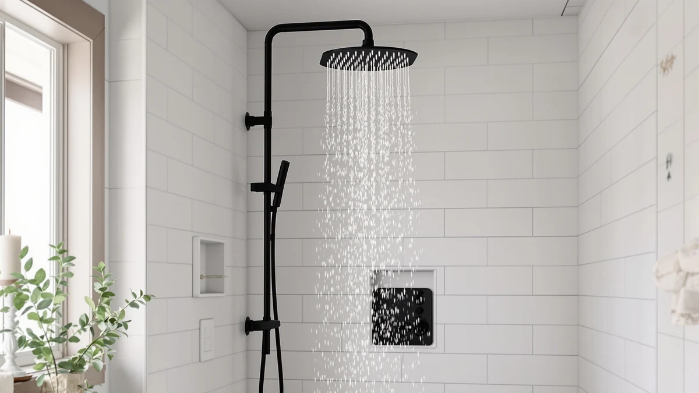

Quick Answer
At $119.99, the JingGang 12 Inch Ceiling Mount offers a 12 Inch-SQUARE head and a chrome-plated ABS build that undercuts some competitors on price. It is a reasonable pick if you want ceiling coverage without crossing the $130 mark, though buyers who want an all-metal build should compare it against the HammerHead Showers Solid Metal 12 below.
Our pick: JingGang 12 Inch Ceiling Mount, $119.99 Check Price on Amazon
Things to Know Before You Buy
- The JingGang 12 Inch Ceiling Mount uses a 12 Inch-SQUARE head, the same footprint as most ceiling-mount rain shower heads in this price range.
- At $119.99, it sits in the middle of the four shower heads covered in this review, between the HammerHead at $119.95 and the Afina at $129.00.
- Its ABS-and-chrome-plating build trades the weight of solid metal for a lighter, more affordable price point.
- Confirm your existing plumbing rough-in matches a square 12 inch head before buying any ceiling-mount shower head in this comparison.
This JingGang 12 Inch Ceiling review looks at whether a $119.99 shower system with a 12 Inch-SQUARE head and a chrome-plated ABS build is worth a place on your bathroom shortlist. Ceiling-mount shower heads promise an even spread without a handheld nozzle sticking out from the wall, and JingGang's version targets buyers who want that look for under $130. We compared its size, material, and price against three other shower heads sold in the same range to see where it actually stands out, and where a different pick might serve you better.
The JingGang 12 Inch Ceiling Mount is not the only option at this price. The HammerHead Showers Solid Metal 12 runs four cents cheaper, the SR SUN RISE Shower Faucet costs about two dollars more, and the Afina Filtered Shower Head High sits near the top of the range at $129.00. Each of the four takes a different approach to the same budget: JingGang leans on head size, HammerHead bets on an all-metal build, SR SUN RISE bundles a complete faucet kit, and Afina focuses on filtration. Below, we walk through what the JingGang actually offers for its price, who it suits, and where the other three might serve you better.
Why You Should Trust Us
Best Shower Heads is written and edited by Ilane Tall, who covers bathroom fixtures by comparing price, build material, and documented specs rather than marketing copy. We do not run a fake testing lab, and we do not claim to have installed or lived with every product we cover. Instead, we research manufacturer specifications, pricing, and verified owner reviews, then lay out the facts so you can judge fit for your own bathroom. Every price and spec referenced in this JingGang 12 Inch Ceiling review comes directly from the product listing data we track, and we update it when prices change.
That approach means you will not find invented lab scores or a fabricated star rating on this page. Where a product listing does not publish a rating or review count, as is the case with the JingGang 12 Inch Ceiling Mount, we say so plainly instead of guessing at a number. We would rather tell you what we do not know than manufacture confidence we have not earned.
Our Research Experience
We did not install the JingGang 12 Inch Ceiling Mount in a bathroom for this review. Best Shower Heads is a research-based buying guide, and we do not own a dedicated shower rig to run water-pressure trials. What we do instead is compare the listed specs, material, size, and price of the JingGang against its closest competitors, and we read through verified buyer feedback on similar ceiling-mount systems to flag common praise and common complaints. For this JingGang 12 Inch Ceiling review, that meant checking the 12 Inch-SQUARE head dimension and the ABS-and-chrome build against the HammerHead, SR SUN RISE, and Afina models, all priced within about ten dollars of each other. Where a claim cannot be verified independently, we say so rather than presenting it as something we witnessed firsthand.
Overview & Specs

JingGang 12 Inch Ceiling Mount
What we like
- Priced at $119.99, undercutting the Afina Filtered Shower Head High by nine dollars
- 12 Inch-SQUARE head gives wide ceiling coverage without a bulky handheld arm
- Chrome-plated finish matches common fixture hardware found in most US bathrooms
Flaws but not dealbreakers
- ABS plastic body will not match the solid metal construction of the HammerHead Showers Solid Metal 12
- No published rating or verified review count yet to confirm long-term durability
| Material | ABS + chrome plating |
| Size | 12 Inch-SQUARE |
The JingGang 12 Inch Ceiling Mount is built around a 12 Inch-SQUARE head, a shape that favors buyers who want their ceiling shower head to match the clean, geometric lines of a modern bathroom rather than the round heads older systems use. At $119.99, it lands squarely between the HammerHead Showers Solid Metal 12 at $119.95 and the SR SUN RISE Shower Faucet at $122.39, which puts it in direct competition with both on price alone. The listed build combines ABS plastic with a chrome-plated finish, a construction choice that keeps the unit lighter than an all-metal design and, typically, easier on the wallet. For a ceiling installation specifically, that lighter weight can also simplify mounting compared to a heavier all-metal head, since the supporting bracket and rough-in do not need to carry as much load over time.
That construction choice is also the main tradeoff buyers should weigh. A chrome-plated ABS body will not carry the same long-term durability reputation as the solid stainless steel and brass builds found in metal-bodied competitors like the HammerHead, and buyers planning a decade-long install may want to factor that into their decision. There is no published rating or review count attached to this specific listing yet, so anyone considering it should read current buyer feedback on the Amazon listing itself before committing. For a straightforward ceiling-mount upgrade under $120, the JingGang 12 Inch Ceiling Mount covers the basics: square head, chrome finish, and a price that competes directly with the other three shower heads in this review.
What We Liked
The clearest strength of the JingGang 12 Inch Ceiling Mount is its price relative to head size. A 12 Inch-SQUARE head at $119.99 gives you more shower coverage per dollar than the 8 inch SR SUN RISE Shower Faucet, which costs more despite a smaller head. The chrome-plated finish also keeps it visually consistent with faucet hardware already common in US bathrooms, so you are less likely to end up with mismatched metals on your shower wall. For shoppers comparing shower heads on size versus price, this JingGang 12 Inch Ceiling review puts the model near the top of the value list.
What Could Be Better
The ABS-and-chrome-plating construction on the JingGang 12 Inch Ceiling Mount is the biggest compromise here. Buyers who prioritize an all-metal build, the kind found in the HammerHead Showers Solid Metal 12, will notice the difference in material quality even though the price gap is only four cents. There is also no rating or review count published for this listing, which makes it harder to confirm how the finish holds up over months of daily use. Anyone sensitive to long-term corrosion resistance in a humid bathroom should treat that missing review history as a reason to check current buyer comments directly on Amazon before buying.
Who Is It For?
The JingGang 12 Inch Ceiling Mount suits shoppers remodeling a bathroom who want a square, ceiling-mounted shower head and a price under $120. It is a reasonable fit if your existing plumbing already supports a 12 inch square rough-in and you are not set on an all-metal fixture. It is a weaker fit if you want the added durability of stainless steel and brass, in which case the HammerHead Showers Solid Metal 12 below is worth comparing directly, or if you want built-in filtration, which points toward the Afina Filtered Shower Head High instead.
Renters and first-time buyers who want a straightforward ceiling upgrade without researching metallurgy tend to land on the JingGang because it answers the two questions that matter most at this price: does the head cover enough of the shower, and does the finish match the rest of the bathroom. Buyers planning a once-in-a-decade renovation, by contrast, may find it worth paying a little more upfront for the metal build of a competitor rather than revisiting the install sooner than planned. Someone splitting a bathroom remodel budget across several fixtures will likely weigh the JingGang's lower upfront cost against the longer service life a metal body tends to offer.
Alternatives to Consider
If the JingGang 12 Inch Ceiling Mount does not quite match what you need, these three shower heads sit in the same price bracket and cover different priorities: an all-metal build, a complete faucet kit, and built-in filtration. None of them cost more than ten dollars above or below the JingGang, so the decision usually comes down to which single feature matters most to you rather than which option is cheaper.

Editor’s Pick
HammerHead Showers® Solid Metal 12
A solid metal alternative at nearly the same price, built for buyers who want stainless steel and brass over ABS and chrome.
$119.95
Check Price on Amazon
Best Value
SR SUN RISE Shower Faucet
An 8 inch shower faucet set priced a few dollars above the JingGang, aimed at buyers who want a complete faucet kit over a larger head.
$122.39
Check Price on Amazon
Premium Choice
Afina Filtered Shower Head High
The priciest of the four at $129.00, built around filtration rather than head size, for buyers more concerned with water quality than coverage.
$129.00
Check Price on AmazonFrequently Asked Questions
Is the JingGang 12 Inch Ceiling Mount worth $119.99?
For buyers who want a 12 Inch-SQUARE ceiling shower head and do not need an all-metal build, the price is competitive. It costs four cents more than the HammerHead Showers Solid Metal 12 and nine dollars less than the Afina Filtered Shower Head High, so it sits squarely in the middle of this comparison on value.
What is the JingGang 12 Inch Ceiling Mount made of?
The listed build is ABS plastic with a chrome-plated finish. That is a lighter and typically less expensive construction than the solid stainless steel and brass used in metal-bodied competitors like the HammerHead Showers Solid Metal 12.
How does the JingGang 12 Inch Ceiling Mount compare to the SR SUN RISE Shower Faucet?
The JingGang offers a larger 12 Inch-SQUARE head for less money than the SR SUN RISE Shower Faucet, which has an 8 inch head and costs $122.39. If head size matters more to you than a complete faucet kit, the JingGang is the better value of the two.
Final Verdict
This JingGang 12 Inch Ceiling review comes down to one tradeoff: a 12 Inch-SQUARE head and a $119.99 price against an ABS-and-chrome build instead of solid metal. For shoppers who want ceiling coverage without crossing $130 and do not need an all-metal fixture, JingGang belongs on the shortlist. If durability or filtration matters more than head size or price, the HammerHead Showers Solid Metal 12 or the Afina Filtered Shower Head High are worth comparing directly before you buy.
Related Guides
If this JingGang 12 Inch Ceiling review has you comparing finishes and brands, these guides cover close relatives from the same lineup and the competitors named above.